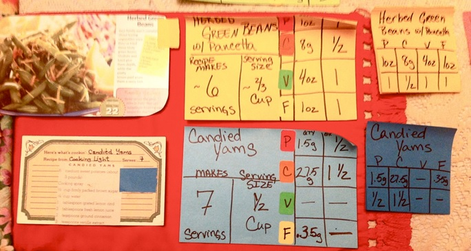
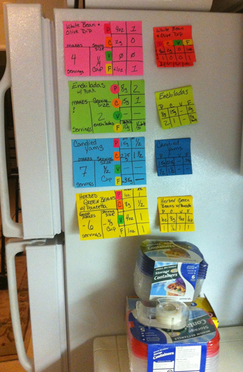

Glucose Control System
This project involved working directly with patients in the community to help them achieve their health goals.
Project Overview
Course Title: Design Thinking for Better Health
Project Type: Team
Duration: 10 weeks
Methods: intervews, data consolidation, POV creation, prototypes
Background
In the United States, approximately 75% of medical expenditures are for illnesses that are predominantly lifestyle related (e.g. type 2 diabetes, arthritis, and heart disease). It has been shown that as people modify their lifestyles and adopt healthier habits, medical problems are reduced/avoided and a healthier and happier life is achieved.
Patients were referred to our class by primary care physicians at the Palo Alto Medical Foundation and the Stanford Center for Continuing Care. Each student was assigned a patient for whom they were primarily responsible.
Data Collection and Interpretation
Initially, my 4 teammates and I visited our patients at their homes and/or workplaces. We interviewed them and took notes and photographs before reconvening to discuss our observations as a group. Below is a summary of the data collected on one of our patients, "Robin".
Her doctors recommend
-
Losing weight (~20 lbs)
-
Exercising regularly; walking as much as possible
-
Lowering hemoglobin A1C and improving stability of blood sugar levels
-
Consuming 6-8 carbohydrate exchanges per day
"Robin" feels
-
Frustrated by the lack of coordination among medical personnel
-
Discouraged by the limitations caused by her recent injuries (broken ribs) and many medical conditions (diabetes, arthritis, etc.)
-
Annoyed by a perceived lack of empathy
POV
A point-of-view (POV) facilitates generative ideation by reframing a design challenge into an actionable problem statement. Among other things, POVs are used to provide focus, fuel brainstorms, and determine the relevance and merit of competing ideas.
One of our first tasks was to create a POV for each of our patients that adequately captured three important elements: user, need, and insight.
ROBIN
a generally happy, energetic, and creative retiree
NEEDS
to maintain a positive emotional relationship to cooking and food
BECAUSE
her physical limitations can cause discouragement that
induces overeating and destabilization of her blood sugar
Prototype
Following consideration of several alternatives, we decided to implement a prototype for food portioning and labeling. Our idea was to color code health-relevant nutrients, thus simplifying the process of counting carbohydrates and adhering to other dietary requirements.
With the budget allotted to us, we purchased two types of food storage containers in addition to labeling supplies. One week later, we contacted Robin to determine what was working for her and what wasn’t.
Based on her feedback, we set goals to streamline the label creation process and incorporate minor adjustments to our system.
Final Iteration
Dietary Planner
4" Label
Recipe card
More Projects


Public Restroom Redesign
Health Management System
Intelligent Radiology Tutor
@2017 by Aubrey Henderson. All rights reserved.